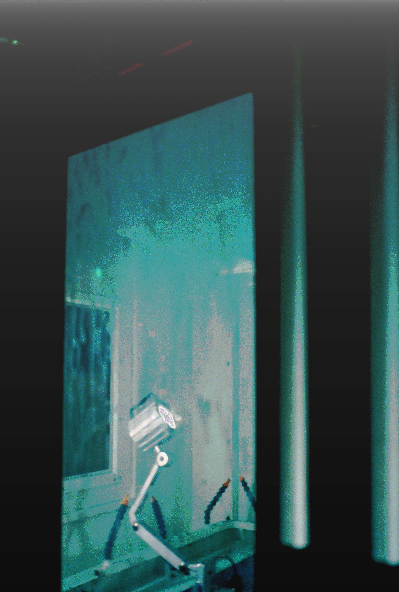

Broken
I decided to revisit glitch art for the final project since it was the most captivating thing I learned from this semester. The series of glitched images are titled "Broken" that showcase a series of three main images that were glitched to be more abstract than the one before then finally reveal the original, untampered images.
Window


Arm

Keys